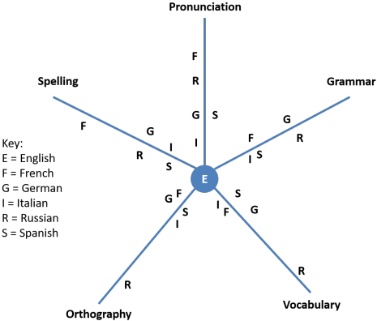

Language transfer: interference and facilitation
You may recall from any physics you have studied that ripples in
a liquid sometime coincide to increase the height of a ripple and
sometimes do the opposite, flattening the wave altogether in some
cases. The first is called constructive interference and the
second destructive interference. The key is whether the phases
of the waves are synchronised or not.
Language interference works in analogous ways although destructive
interference is simply called interference and constructive
interference is referred to as facilitation.
When the learner's first language is in synch with the target
language, learning can be speeded up considerably because no new
concepts or systems need to be acquired. All that is needed is
to learn the ways the target language expresses a concept which is
already familiar. This facilitates the learning process
considerably.
However, when the learner's first language is out of synch,
encompassing very different concepts and ways of referring to
reality, then the learner is faced with a triple problem:
- understanding the conceptual categories
- learning how these categories differ from the familiar first-language categories
- learning how to encode these unfamiliar categories in the target language
and that means that the learning process becomes slower, harder and less reliable.
In this guide, we will make frequent reference to learners' first
languages but it should be remembered that facilitation and
interference also occur between the target language and any other
language(s) the learner may have acquired either as a joint first
language or as a second language. In many parts of the world,
bilingualism is the norm not the exception and a learner who has
more than one language to compare to the target language is in a
better position to identify similarities but is simultaneously
perhaps more susceptible to interference. The latter is
certainly the case where both or all of the learners' current
languages are out of synch with the target language.
We will also be considering specific examples concerning learning
English as the target language although in principle, of course, all
the considerations will apply to the learning of any language.
Only the details will differ.
The following does not trespass (too much) on the philosophical
considerations concerning how and to what extent people's first
language(s) may determine how and in what way they think about the
world. Such considerations are dealt with elsewhere in
the guide to Language, Thought and Culture (new tab) which is
also linked in the list at the end.
All we will say about this here is that if people's first languages
determine to any degree how they conceptualise the
world, their own thoughts and feeling and the relationships they
perceive between phenomena then first-language interference and
facilitation will play a significant role in second-language
learning.
It may be argued that the very existence of first-language
interference and facilitation is evidence that thought processes
are, to some extent, determined by language, not the other way
around.
In his preface to Linguistics Across Cultures (1957), Lado sets his
stall out like this:
The plan of the book rests on the assumption
that we can predict and describe the patterns that will cause
difficulty in learning, and those that will not cause difficulty, by
comparing systematically the language and culture to be learned with
the native language and culture of the student.
(Lado, 1957: preface)
Since then the assumed connection that Lado refers to has been questioned repeatedly, not least by Pinker (2007) and others. However, language teachers have often noted that some concepts and language items are demonstrably more difficult for some learners to acquire and have drawn the conclusion that first-language interference plays a significant role in explaining the difficulties.
Less anecdotally, Ellis presents the following data concerning the evidence for interference assumed in a variety of studies:
| Percentage of interference errors reported by various studies of L2 English Grammar | ||
| STUDY | % INTERFERENCE ERRORS | TYPE OF LEARNER |
| Grauberg 1971 | 36 | First language German, adult, advanced |
| George 1972 | 33 (approx.) | Mixed first languages, adult, graduates |
| Dulay and Burt 1973 | 3 | First language Spanish, children, mixed levels |
| Tran-Chi-Chau 1975 | 51 | First language Chinese, adult, mixed levels |
| Mukkatesh 1977 | 23 | First language Arabic, adult |
| Flick 1980 | 31 | First language Spanish, adult, mixed level |
| Lott 1983 | 50 (approx.) | First language Italian |
The figures relate to grammatical error rather than lexical, phonological or other forms of error and it seems safe to assume that similar findings would be obtainable elsewhere. Pronunciation errors, in particular, can be traced almost wholly to first-language interference (although some sounds are intrinsically difficult even for native speakers).
There is, however, a problem with studies like the ones cited above: which errors can we safely ascribe to language transfer and which errors are made simply because the target structure or lexical item is intrinsically difficult? Put another way, which errors are interlingual and which are intralingual?
There is no simple answer. For example, the article system in
English is quite complex and demands a consideration of specificity
along with countability to be used successfully. If learners
make errors in this area, it is unsurprising because the system is
complex. Learners whose languages have articles but deploy
them differently may be led into error by transfer from their first
language but those learners whose first languages have no articles
(such as Polish and Russian) make errors because the whole concept
is foreign to them. It has been argued that in the latter
case, the problems arise for intralingual reasons: the system is complex.
In
the former the reason is interlingual interference because the
systems are differently complex.
It may, of course, be true that both interlingual and intralingual
factors conspire to making a language system or item harder to learn
for some people.
Swan puts it this way:
there is a mistaken view that errors have to
be analysed in either/or terms: they must
either be
attributable to the mother tongue, or to features of the
second language. ... Intrinsic difficulty and crosslinguistic
influence are not alternative sources of error.
(Swan, in Schmitt and McCarthy (Eds.),
1997:161, emphasis in the original)
Languages |
This is not the place to list language families and the
relationships and affinities which can be identified between them.
For more on that, see the guide to types of languages, linked below.
There are, roughly, 6500 languages in the world.
In the following, we will, however, be making reference to language
groups and you may be unfamiliar with what they are so here is a
very brief run-down of the main subfamilies and languages which we
exemplify in this guide:
| Groupings: | Romance | Germanic | Slavic | Chinese | Others | |
| Main examples: |
Catalan Corsican French Galician Italian Portuguese Romanian Romansh Sardinian Sicilian Spanish |
Afrikaans Danish Dutch English Faroese Frisian German Icelandic Luxembourgish Norwegian Swedish Yiddish |
Belarusian Bosnian Bulgarian Croatian Czech Macedonian Polish Russian Serbian Slovak Slovene Ukrainian |
Gan Hakka Hui Jin Mandarin Min Píng Wu Xiang Yue: Cantonese |
Arabic Hebrew Basque Celtic languages Estonian Finnish Hungarian Greek Indian languages |
Filipino Japanese Korean Malay Malagasy Persian languages Tagalog Thai Turkish Vietnamese |
Romance, Germanic and Slavic languages as well as Greek and
Persian languages
are all Indo-European languages as are the languages we refer to
here as Indian languages, because we are mostly excluding South
Indian Dravidian languages.
Languages under 'Others' in the right-hand column do not form
groupings but are examples of member of other language families.
Arabic, in particular may be described as a macro language because
its varieties are not fully (or at all) mutually comprehensible.
Arabic and Hebrew belong to the same language family (Semitic) as do
Finnish, Hungarian and Estonian (Finno-Ugric) and Malay, Tagalog,
Filipino and Malagasy (Austronesian).
Turkish is the sole representative of a large group (Turkic).
Basque is a language isolate with no known relatives and Korean may
also be one. Thai and Chinese languages are sometimes grouped
together as Sino-Tai languages.
This is a very crude division but will suffice for our purposes
here.
From time to time, reference may be made to languages outside these
examples.
Language distance |
The more different a learner's first language is from the target
language, the fewer will be the opportunities for inter-language
language facilitation but the greater will be the need, usually, for
new concept-building activities because the languages will have very
different ways of representing events, states and objects combined with
different ways of
classifying them and signalling the relationships between them.
Language distance can be visualised like this for some Indo-European
languages:

From Crystal (drawing on James), 1987:371
As Crystal points out, however, although language distance clearly
can play a role in how much interference and facilitation is likely
to occur, it is very difficult, given the number of variables, only
five of which are represented here, to quantify the effects.
Differences, for example, in the collocational characteristics of
words or the relationships between tense forms and the times to
which they refer are notoriously difficult to estimate reliably.
This little illustration concerns only a small range of Indo-European
languages and the differences between, e.g., Mandarin and Italian
or Vietnamese and Farsi would probably be off the scale.
However, for languages in the same family ideas like this can be
revealing, showing for example, that German speakers may have less
difficulty than Russian speakers in acquiring the lexis they need
but they will still have more difficulty than Italian or French
speakers. Both pronunciation and spelling will cause French
speakers more difficulty than most and so on.
This guide is divided in the following into two parts: influences on the acquisition of second-language lexis and influences on the acquisition of second-language grammar and structure. However, we will often find that the two systems overlap and we will note that where it is appropriate.
 |
The acquisition of lexis |
Before we can consider how a learner's first language may influence her acquisition of the lexis of another language, it is necessary briefly to consider what it means to learn a word in a foreign language. In other words, what does 'knowing a word' mean? We'll take some of the categories of knowing piecemeal and consider how first-language interference may hinder and facilitation may help. (For a discussion of what else is meant by knowing a word, refer to the guide to teaching lexis, linked below.)
 |
Meaning and semantic space |
Semantic space refers to the word's core or essential (in
Aristotle's term) meaning. There are too many objects in the
world for us to reserve a particular noun for each and too many
possible actions for us to do the same with verbs. What we do,
therefore, is settle on what we consider the prototypical features
of an entity and assign to that the name we wish to use which will
be understood by everyone in our speech community.
It follows that if we see, for example:
we will instinctively ascribe all four objects to the same semantic
space. They are bottles, and they share certain
prototypical features that we associate with the term: material
(glass), shape (tall with a neck), purpose (liquid container) and so
on. With entities such as
this which relate to easily defined physical objects, there is often
a clear one-to-one relationship between a word in one language and a
word in another. So, for example, we can have:
| English | French | German | Russian | Greek | Malay |
| bottle | bouteille | Flasche | бутылка | μπουκάλι | sebotol |
The words may look and sound very different and be represented by
completely different orthographies but the semantic space they
inhabit is, to all intents and purposes, identical.
What we have is an instant recognition of the function of the object
and its outward appearance. At the edges, there may be some
fuzziness because it is not always perfectly clear where, for
example, bottle grades into jar and the cut-off
point may be slightly different in different languages and between
different users of the same language.
Nevertheless, most learners will have a language close enough to any
other for the same semantic space to be occupied by the same term.
Words for items like these, and there are many thousands of them, require only
to be learned along with their pronunciation and written form
for them to be used with confidence and accuracy.
In the same way, certain actions can be referred to slightly less easily
although the semantic space they occupy is familiar, simple and
common. So, when we see something like:

and are asked what the woman is doing, we will probably suggest
speaking. We might, however, suggest pointing,
talking, arguing, accusing, complaining and a few more verbs so
the situation is not quite so clear.
Nevertheless, if we keep things simple we can suggest:
| English | French | German | Russian | Greek | Malay |
| speak | parler | sprechen | говорить | μιλώ | bersuara |
However, verbs are already trickier than nouns in this respect
because they are subject to interpretation in a way that physical
objects are not and grammatically variable.
We interpret actions and states in different ways depending on the
context in which they occur as we see above when trying to assign a
verb to the little graphic.
Between languages, there are also differences of word grammar lying
in wait to catch out the unwary.
In English, for
example, it not possible to say:
*I speak Mary
but in Russian we can (and it means tell).
In the same way, we can say:
She is accusing him
but not:
*She is complaining him
Anyone who has encountered the need to teach the distinctions in
English between say, speak, tell and talk will
have noted the differences in use of the verbs across a variety of
languages.
In other words, although the verbs occupy similar semantic spaces,
they do not occupy the same semantic spaces.
It is a theme much beloved of journalists and some websites to identify words in some languages which are, it is averred, untranslatable because the semantic space they occupy is simply not one recognised in other cultures. They include, for example:
- Waldeinsamkeit (German)
the feeling of solitude in the woods - age-otori (Japanese)
looking worse after a bad haircut - sobremesa (Spanish)
a long post-lunch socialising event - xerosfyri (Greek)
the consumption of alcohol without accompanying food
and many more. They are, of course, translatable as the list shows, just not in a single word. The semantic space they occupy may be an unfamiliar one but not one that is beyond the imagination of most people.
Other terms are more important and much less open to easy
understanding because the semantic spaces they occupy really are
unfamiliar and difficult to conceptualise. The differences,
for example, in English between:
stroll, saunter, wander, amble
job, profession, trade, vocation, career
fence, railing, balustrade, bannister, rail
cosy, comfortable, comfy, homely, snug
are all difficult to conceptualise because they are unlikely to
occupy the same semantic spaces in other languages and because the
semantic space that they occupy in English is ill defined and native
speakers may well disagree about where the borders of the spaces
are. They are interlingually problematic but also
intralingually problematic.
Similar considerations apply in reverse, of course, and all
languages contain words which are similar in meaning but not precise synonyms
because they occupy slightly different spaces.
(There is a relationship here that is called troponymy, closely
allied to hyponymy which refers to the fact, for example, that all
the verbs in the first set are ways of walking and all the nouns in
the second set are types of occupation.)
Between languages, the situation gets even muddier. Many languages will distinguish verbs meaning put on for clothing depending on what part of the body and what type of clothing is in question (Japanese, for example). Some, such as French, distinguish, for example, between rivers which empty into the sea and those which form tributaries of other rivers. Most other languages don't do that although some distinguish directions of travel depending on whether one is going up or down stream. Many languages, including German and Greek distinguish between try in the sense of experiment with and try in the sense of attempt.
Even when languages have single words for the same concepts, the
semantic space they occupy may be somewhat different so, for
example, the word head translates into the French tête,
the German Kopf, the Spanish cabeza, the Greek
κεφάλι [kefali] and so on but the occurrence of the words in phrases
such as:
the head of the school
the head of the stairs
the head of a match
and so on will not be similar because polysemy and metaphorical or
figurative uses do not translate.
Cultural influences play a significant role in the attribution of
semantic space to certain lexemes.
Abstract concepts such as guilt, shame, joy, delight, ire,
cheerfulness, contentment, disappointment and so on will be
culturally influenced and may not have any equivalent at all in the
target language and its original culture.
This is not so much a difference of semantic space as a different
environment altogether.
 |
An example: kinship terms |
If you are born into a culture in which kinship relationships are particularly important, it will be unsurprising if your first language has an elaborate and complex way of expressing familial relationships. Kinship terms are a good example of the establishment for cultural reasons of specific semantic spaces for particular lexemes. For example:
In English a distinction is made between siblings and
cousins so the children of one's mother's siblings or father's
siblings,
of either sex, are distinguished lexically from the children of
one's parents. Hence we distinguish between brother,
sister and cousin.
However, English does not distinguish, as many languages, such as
German, do, between female and male cousins. Some languages,
Hawaiian, for example, make no distinction at all between brothers,
sisters and cousins and some languages distinguish between cousins
who are the children of one's father's sister or one's mother's sister.
Other languages, including Kannada, Telugu, Tamil, Turkish,
Sinhalese, Chinese languages, Japanese, Korean, Vietnamese, Tagalog,
Hungarian, Bulgarian, Nepalese, Sudanese and more distinguish between older
and younger brothers or sisters, having different terms to refer to
each. (See the guide to semantic for slightly more and some
examples of kinship terms.)
Although all languages are capable in theory of expressing any
thought, the constraints produced by language in terms of kinship
are clear. Most speakers of English, for example, are
unconcerned whether someone's sister is older or younger than the
person in question but this is clearly significant information in
other cultures and reflected in the language forms.
Interlingual interference may lead speakers of such languages to
apply a term too widely in some cases or understand it too narrowly
in other cases.
False friends and cognate words |
False friends are a well-known aspect of language interference
although there are, at least for speakers of European languages, many
more true friends with cognate words denoting much the same thing
than there are false friends whose meanings have drifted apart.
Loan words, too, often take on different meanings in the languages
in which they have been borrowed so, for example, cider has
been borrowed into Korean from English but describes a soft drink,
not an alcoholic drink made from apples. Often a loan word or
expressions may be a calque and translated directly into the
receiving language. Because it has been borrowed to fill a
perceived gap in the host language's lexicon, it will often be
altered in terms of the semantic space it occupies.
There are exercises on false friends on this site in the learners'
section where you may discover more examples.
False cognates, such as the Japanese word okoru meaning
much the same as the English word occur, are very rare and
usually not particularly helpful.
Adjectives |
Adjectives are a class of words open to various interpretations
of the semantic space they may inhabit and the kinds of things they
may describe.
Colour divisions, for example, where red becomes orange or blue
becomes green, have also been shown to be variable across languages.
Collocating nouns are a source of interlingual error in many cases
and expressions such as *a high tree, *a big time, * a thin
street, *a small moment and so on are commonly the result of
the application of the semantic spaces of the L1 adjective to
English.
English and many other languages, such as Swedish and German, view time
in terms of distance so we have expressions such as:
a long time
a short pause
a lengthy job
etc.,
all of which can be translated directly.
But other languages, such as Greek and
Spanish, view time in terms of size so the equivalent expressions
would be:
a big time
a small pause
a large job
etc.
It demands an effort of will to begin to think of time in terms
of length rather than size.
Shape, too, is variably described so, in English we might
distinguish between something which is round and something
which is circular but other languages may not and Yiddish,
Arabic, Malay, Amharic, Finnish, Vietnamese, Bulgarian and Kazakh,
for example, make do with one adjective for both.
Distinctions in terms of collocation are also unpredictable so while
English distinguishes high from tall, appending
the first to large masses, usually, so we have:
high mountain
high wall
high building
and appending the second more conventionally to upright narrow
objects so we have:
tall person
tall tree
tall spire
etc., many languages, including Bosnian, Serbian, Macedonian,
Russian, Italian, Ukrainian, Polish, Swedish and lots more make no
distinction at all.
English will apply the adjective small differently from
little because the latter adjective implies attractively small
and the former does not (which explains why the TV series was called
Little House on the Prairie, not Small house on the
Prairie). Unsurprisingly, the semantic spaces occupied by
the two adjectives in English is not parallelled in most other
languages.
In English, too, the comparative form of little is not the
word littler which is mostly confined to children's
language but smaller.
Prepositions |
Prepositions, insofar as they can be said to occupy any semantic
space at all, are notoriously difficult for learners of other
languages to use successfully in English because the idiomatic uses
are legion.
English is particular rich in prepositions (the
list on this site runs to around 200 of them) and the
distinctions in use between them are sometimes very nuanced.
Other languages, such as French and Greek, which have far fewer
prepositions to deal with will subsume meanings which are encoded
with separate words in English under one word. A case in point
is the distinction between over and above which
are rendered in Spanish, Russian, Catalan, German, Czech, Hungarian,
Danish, Malay, Japanese and a host of others by a single word.
Just as many other languages (including Swedish, Serbian, Basque,
Welsh and others) do make a distinction and the concept is, of
course, translatable in other ways in all languages.
Errors in prepositional use, often when they are dependent on verbs,
are very frequent and can usually be traced to the negative
influence of the learners' first languages. We get, for
example:
*He hit the ball above the net (when
over is meant)
*He complained of the service
*She decided for the blue shirt
and thousands more.
 |
Pronunciation |
It is clear that the possession of, for example, a Japanese,
French, Italian or whatever accent when speaking English is a direct
result of first language interference. Adult learners in
particular will tend to use the phonemes of their first language(s)
when attempting to pronounce a foreign one. Children, on the
other hand, are less prone to this behaviour.
Less considered is the fact that many phonological aspects of
people's first languages are parallelled in English so the
pronunciation of some phonemes is for them fairly straightforward.
The learner's first language may facilitate the pronunciation of a
second.
There is a guide to teaching troublesome sounds on this site, linked
below, which considers some of the aspects of a range of languages
which make the pronunciation of English sounds difficult to acquire.
From that list, we can extract a few examples of interference:
- The /iː/-/ɪ/-/i/ distinction
- French, Italian, Greek, Persian languages and most Chinese languages
only have the longest of these sounds so that is frequently
substituted without a distinction being made, therefore, between
the word hit and heat.
Other languages, however, do have the intermediate sound /i/ and they include Swedish, Spanish and Catalan, Portuguese, Polish, Turkish (which also has the short sound), Malay / Indonesian and Japanese.
For speakers of these languages, the /iː/ sound is more easily produced because it simply involves the slight lengthening of an already familiar phoneme. The facilitation is one worth exploiting in the classroom.
Speakers of Dutch, German, Russian, Arabic, South Asian languages and Thai, for example, will have few problems with these phonemes because they are shared in their languages. - The /ə/
- It is often averred that speakers of Italian, Spanish,
Portuguese, Greek, Czech, Polish and Arabic are not familiar
with the schwa sound. This leaves a very large number of
languages which do have something akin to the sound for whom it
holds no mysteries.
However, even speakers of languages which do not regularly use the sound will use it in very rapid speech because it is a natural reduction to make. Much more important in this area is the question of timing to which we shall come. - Aspiration
- Whether or not a phoneme is aspirated in English is not
meaningful. It may sound odd to aspirate the /p/ in
capture but leave it unaspirated in pot but no
communicative effect will be noted.
In other languages, notably the Chinese languages, Korean and Thai, aspiration is meaningful so /tʰ/, /kʰ/ and /pʰ/ may all be meaningfully distinguished from their unaspirated forms.
However, the fact that the languages have both forms is actually a facilitation factor not granted to speakers of languages such as Dutch, Spanish, Portuguese and Russian who do not have the aspirated forms and will pronounce the phoneme /p/ in the initial position more closely to /b/, the /t/ closer to /d/ and the /k/ closer to /ɡ/. This is interference. - /θ/ and /ð/
- These sounds are not unique to English but few languages
have both, so speakers of languages which have one without the
other (such as Catalan and Spanish) with often use only that one
whenever either is needed.
Speakers of languages which have neither sound will substitute variably and slightly unpredictably /f/, /z/, /s/, /d/ or even /v/.
Greek speakers, by contrast, will benefit from some facilitation because their language has both sounds (the symbols for which are drawn from Greek). - /l/ and /r/
- It is not the case that these sounds do not exist in some East Asian languages but it is the case that they are not phonemically distinguished. Speakers of most languages can make the sounds (facilitation) but may not see the purpose in distinguishing them (interference).
- Timing
- This is a more important issue than the pronunciation of
individual sounds although it should be remembered that
languages live on a cline from broadly syllable timed to broadly
stress timed. It is not an on-off relationship.
That said, here's the picture for a range of languages.
Speakers of the languages on the left of this table are often more easily able to approximate the prosodic patterns and weak forms of English than those in the list on the right.BROADLY STRESS-TIMED LANGUAGES BROADLY SYLLABLE-TIMED LANGUAGES ARABIC (with variations)
CATALAN
DUTCH
ENGLISH
GERMAN
PERSIAN (FARSI / DARI / TAJIK)
PORTUGUESE (EUROPEAN)
RUSSIAN
SCANDINAVIAN LANGUAGESCHINESE LANGUAGES (also tonal)
FRENCH
GREEK
INDIAN LANGUAGES
ITALIAN
JAPANESE
PORTUGUESE (BRAZILIAN)
SPANISH
SWAHILI
THAI (also tonal)
TURKISH
VIETNAMESE (also tonal)
WEST AFRICAN LANGUAGES
In other words, the list on the left shows potential facilitation and the list on the right potential interference.
Some languages, such as Japanese use a different, mora timing system and that, too, may contribute to a noticeable accent. (In Japanese a vowel (V) takes the same time to utter as a consonant (C) plus a vowel so V takes the same time as CV and CVV takes twice as long as CV. Slovak is often considered also to be a Mora-timed language.) - Consonants
- While the manner and place of some consonants, notably /t/,
/r/ and /d/ may vary slightly and contribute to a foreign
accent, most learners' first languages will share many of the
consonant sounds of English and accurate pronunciation is,
therefore, facilitated. For example, 16 out of 24
consonant sounds are shared between English, Dutch and Thai, 15
by Scandinavian languages and Polish, 17 by French, Spanish,
Malay, Portuguese and Catalan, 18 by Russian and Greek and 19 by
Farsi.
Which consonant sounds are shared will vary, naturally.
There is a good deal more on the potential interference patterns in English pronunciation in the guide to teaching troublesome sounds, linked below. It is the intention of that guide to focus on interference and ignore facilitation.
Affixation, compounding and conversion |
Knowing a word also means knowing something of its family so the
full knowledge of the word nation for example, may also
include knowledge of international, transnational, nationalise,
national, nationality and maybe more.
There is scope here for both facilitation and interference.
 |
Word : Morpheme ratio |
Here we need to consider the sorts of languages our learners
speak because the differences between languages such as Mandarin
with very low morpheme to word ratios and those such as German and
Turkish with very high ratios is critical to the amount of
conceptual understanding that is likely to occur to hinder or
facilitate learning English.
What this means briefly is that in a clause such as
John's housemates misbehaved
we have three words but 8 morphemes so the ratio is approaching 3 :
1.
In German, to take an example of a truly agglutinating language, a
word such as Hauptbahnhofgaststätte (roughly central
station buffet) is actually made up of 5 morphemes but one word giving a 5 :
1 ratio.
The concept of affixation for three purposes, grammatical marking,
semantic difference and lexical derivation, will be familiar to any
speakers of languages with mid to high morpheme : word ratios but
mysterious to those whose first languages are at the analytic or
isolating end of the cline.
The picture looks like this:

However, facilitation is also a potential with the nature of
English because it frequently shows quite isolating characteristics.
For example, the clause:
I will see you at six
contains 6 words and each word is a standalone morpheme so the ratio
is 1 : 1. Speakers of isolating languages will, therefore have
fewer difficulties understanding and using tense markers that are
single words or combinations of single words (such as will,
shall, have gone, going to or used to). Speakers of
synthetic languages such as French, Italian and Spanish will have
more difficulty because in their languages, tense is usually shown
by affixing an ending to a verb or altering it internally (or both).
Affixation |
On the other hand, speakers of synthetic and agglutinating
language may more quickly acquire a feel for how affixation occurs
in English and will not be fazed by the concept of adding a prefix
to alter the meaning or a suffix to change word class or grammatical
function.
Japanese, to take just one example, has a wealth of grammatical
agglutinative affixes to denote conditionality, temporal aspects,
desires and more.
There is scope here for both facilitation and interference for
speakers of languages which use suffixation, for example, as English
does to form nouns from other nouns and adjectives. English
frequently does this with the suffixes -tion, -sion and
-ation as in, e.g., introduction, supervision, conversation
etc. It is a fairly simple matter for speakers of some
languages to realise that the suffixes will usually be, e.g., -zione in Italian and -ção
in Portuguese.
However, English has over 30 other ways to form nouns and reserves
only two of them (-ness and -ity) for the trick of
forming a noun from an adjective, which, e.g., Spanish does with the
-idad ending, French often with -ité and German
with -keit.
If learners are tempted to apply their first-language rules of thumb
to the formation of all nouns this will lead to error.
English, too, reserves a limited set of suffixes which form adverbs
but other languages do not make a distinction morphologically and
that also results in errors such as:
*She drove too quick
and so on.
To make matters worse, the English affixation system has developed
piecemeal and, for example, the -ly ending once used to
form adjectives has been confined nowadays to adverb formation.
Hence, we have adjectives masquerading as adverbs such as
kindly, fatherly, friendly and many more.
For speakers of languages at the isolating end of the spectrum, the whole area of affixation is often mysterious. Even when some of the system has been acquired, the problems of the selection of the right noun-forming suffix (30-odd options), verb making (five options), adjective making (20-odd options) and adverb making (seven options) remain.
Prefixation, in principle, will not be a stumbling block for learners whose first languages use them in the same or similar ways but English has around five different prefixes which make negatives and another three used to reverse an action. Selecting the right one for production is very difficult but comprehension is facilitated for such learners. Interference errors such as misarrange, disenjoy, unpolite etc. may result and this is evidence of both interlingual error, reflecting differences in languages, and of intralingual error because the system is complicated in English.
Compounding |
Compounding is not a mysterious concept for speakers of a wide
range of languages including, for example, Chinese languages,
Russian, Polish, Ukrainian, Czech, Slovak, Dutch, German, Afrikaans,
Greek, Swedish, Danish, Norwegian, Finnish, Malay, French, Spanish,
Italian, Portuguese and Romanian but Arabic, Hebrew and other
Semitic languages do not use compounding to form new words.
The concept of compounding may not be odd, then, to most speakers of
many languages and the trick of spotting word boundaries within
compounds will not be difficult to apply to English so, for example
compounds such as oceangoing, gaslight, blackboard, heartbeat,
windmill etc. will be easily unpacked and the nature of the
first language facilitates comprehension.
Speakers of non-compounding languages will often not recognise the
word boundaries at all and, accordingly, may be unable to unpack the
meaning and use the correct pronunciation.
Speakers of agglutinating languages such as German or Turkish may,
however, have difficulty spotting near compounds in English where
the first item is a classifying noun rather than an adjective so,
for example, expressions such as sports car, garden shed, cellar
bar, tree surgeon etc. may not be seen as compounds at all because the
learner would expect such terms to form single words.
More serious is the nature of a language in terms of headedness.
English is overwhelmingly right headed (or head final) and that means that the
right-hand lexeme determines meaning and word class so, for example:
taxi driver is a kind of driver not a kind of taxi
printing paper is a kind of paper not a kind of
printing
doorman is a kind of man not a kind of door
postage stamp is a kind of stamp not a kind of
postage
and so on.
However, many languages which use compounding regularly are left
headed so, for example, in French, a postage stamp is a timbre-poste, in Polish a
znaczek Pocztowy and in Romanian a timbru poștal (stamp
postage in all cases).
The distinction between right- and left-headed languages is a source
of miscomprehension and false production. A term such as
window shopping may be understood to be a type of window and a
learner with a left-headed language may settle on mill of water
when watermill is intended. For information,
here's a little table:
| Right-headed | Left-headed |
|
English and most Germanic languages Scandinavian languages Japanese, Korean, Mandarin and Cantonese Turkish, Basque Most Indian languages |
Romance
languages (French, Italian, Spanish etc.) Slavic languages and Albanian South-East Asian languages (Thai, Burmese, Vietnamese etc.) Celtic languages Most African languages |
The situation is further complicated by the fact that
some languages, notably Slavic ones, put an adjective before
a noun, as English does, but place any classifier after the
noun, as English does not. We get, therefore, in,
e.g., Polish:
a loud door bell
as
głośny dzwonek do drzwi
which is literally:
loud bell of door
and in Spanish that is
un timbre de puerta fuerte
which is literally
a bell of door loud
and in German, which is an agglutinating language, the
classifier forms part of the compound so is rendered as:
eine laute Türklingel
which is literally
a loud door-ring
The confusion caused often, alas, by well-meaning text books
and websites concerning where to place an adjective and
where to place a classifier is compounded by the fact that
other people's languages do things so differently.
 |
Conversion |
English makes a good deal of use of conversion to form
words in different word classes so, for example, clean
is both a verb and an adjective, bank
and bottle
can be both nouns and verbs, flat is an adjective
and a noun and so on.
Many other languages, including most of the ones cited above
which use compounding do not do this regularly and this
causes sometimes quite serious comprehension difficulties
when a word is used in an unfamiliar class. This
can be made even more difficult when a word is used in a
compound and in an unfamiliar word class as in, e.g.:
chateau bottled
While English speakers may take conversion in their stride as a
familiar word-forming technique, speakers of other languages which
have a stricter relationship between word and word classes or which
always use some morphological technique to signal word class will
encounter difficulty in comprehension and will also avoid using
conversion when forming derived words. So, for example, while
driveway
will be understandable,
They walked up the drive
will confuse.
Equally, a learner may inappropriately select
smokiness
because it carries morphological clues identifying it as a noun
formed from an adjective when
the simple noun
smoke
is appropriate.
 |
Style |
Almost any word in English which has a close synonym will differ
from it in style (and often other respects). So, for example
we can get sets such as:
reception, party, do, knees up, bash
work, chore, labour, toil, slog, graft
happy, contented, satisfied, content, pleased, glad, joyful, cheerful,
cheery
etc. which all differ stylistically and, therefore, by their
appropriacy to the context in which they are used.
Although such words may translate well enough for comprehension
purposes into and out of other languages and, therefore, occupy more
or less the same semantic space, it is rarely exactly
the same space.
Once learned, therefore, such items may be, and frequently are, used
inappropriately for the register and style of the language use as
in, for example:
Is she content to go to university?
Are you joyful about the news?
which, while conceivable, are very doubtfully correct utterances.
Because of its history English has, almost uniquely, developed a
three-level synonym system where three words with similar meanings are derived
from three different sources (Anglo-Saxon, French and Latin or
Greek) so we have, for example:
rise –
mount – ascend
ask – question – interrogate
goodness – virtue
– probity
fire – flame – conflagration
and many more.
The temptation for speakers of Germanic, Romance or other Latinate
languages is to select the form which is most familiar
morphologically with a consequent loss of naturalness. This is
not an example of false friends at work because the words actually
do mean more or less the same thing and look similar in English and
the learner's first language.
 |
Multi-word verbs |
It has often been noted that speakers of languages which do not
make any or extensive use of multi-word verbs (such as most Romance
languages and Slavic languages) may often insert stylistically inappropriate single-word
verbs where a native speaker would probably use a phrasal or
prepositional verb so we get, e.g.:
*I dressed warm clothes
instead of
I put warm clothes on
and so on.
Even for speakers of languages which do have forms akin to
multi-word verbs (such as most Germanic languages, including
Scandinavian ones) such languages will often have forms in which the
adverb particle or preposition is different from the one used in
English and that is a source of interlingual error, although the
fact that such constructions exist at all in the learners' first
languages is, naturally, a facilitation factor.
For example, in English, the turn and the adverb down
combine to make a new phrasal verb meaning reject as in:
I turned down the offer
but, although most Germanic language will also use a verb plus a
particle to achieve the same effect, it will be a different verb and
a different particle (usually one which translates more nearly as
from or away than down).
Even when the particle is the same, problems arise in
interpretation so, a German speaker may have little difficulty with
the concept of:
I picked up the book
because the same adverb is used in German with the verb take
(nehmen) to mean the same thing as in
Ich nahm das Buch auf
The same will apply to other Germanic languages, including Dutch,
Danish, Swedish, Norwegian and so on where the particle up
translates directly.
Nevertheless, speakers of those languages will not readily
understand:
I picked up the language by living there
because that metaphorical extension is not parallelled.
Speakers of Spanish, French and hundreds of other languages which
do not use adverbials like this will have serious difficulty because
pick up (as in the sense of taking upwards)
translates as recoger and ramasse, respectively.
In all Slavic languages, the same consideration applies and the verb
will not translate as a verb plus a particle but as a single form.
Indeed the adverb may be ignored altogether so there is no
distinction in production or reception between:
I picked the book
and
I picked up the book.
Word grammar |
This is where we meet the interface between lexis and grammar.
In terms of lexis proper, we have differences across languages of
colligation and transitivity as well as countability and
classification by word class.
Many of these differences are not obvious and some are rarely if
ever considered in classrooms. Here we'll review some of the
differences which often lead to interlingual error and occasionally
to some facilitation.
- Transitivity
- This is a colligational issue which affects how verbs are
used in the target language when it is different from the
learners' first languages.
For example, in English the verb tell is ditransitive and can occur in clauses such as:
She told the children the truth
It can also occur with a that-clause providing an indirect object is present in something like:
She told me that he would be late
That is not the case for equivalent verbs in other languages. Errors such as:
*She told that he would be late
result.
In English, that-clauses can never form the indirect object of a verb and that is a restriction not parallelled in other languages.
Other examples include the verbs hide and conceal (the latter of which is only transitive), jump (often intransitive in English, often only transitive in other languages), dress (usually intransitive) and wear (transitive) and explain which cannot in English be used with a direct personal object:
*I explained him the way to do it
but is used that way in many languages.
A few other verbs, clarify, defend, justify etc. work in a similar way and require the dative shift for the indirect object so we allow:
She clarified the issue to us
They defending their position to the meeting
He justified his actions to me
but not:
*She clarified us the issue
*They defending the meeting their position
*He justified me his actions
A complete list of verbal differences would be very long indeed. - Passive and ergative uses
- While the concept of the passive is common to many
languages, how it is achieved is not.
In English, certain verbs can express passive concepts but no distinction is made (except with get) between active and stative passives. Many other languages, including most Germanic ones, distinguish between:
The window was broken and the rain came in
and
The window was broken during the game
by using a different verb to denote the passive.
Some verbs, such as resemble, lack, contain, possess and more resist the use of the passive at all and that can result in errors such as:
*Enough money was lacked
*Two pints is contained in this bottle
etc.
Some verbs in English are used ergatively, meaning that the ostensible object is actually raised to the subject position so English allows:
The shirts sold well
The window opened
etc. and, because such uses are uncommon in other languages, learners may be tempted to substitute passive constructions to express these ideas and produce
The shirts are sold well
The window was opened
which both imply the intercession of an agent when none is present.
Ditransitive verbs (see above) also allow for two parallel passive structures in English but not in a range of other languages. We can allow therefore two passive structures from:
They gave him the prize
as
He was given a prize
and
A prize was given to him
but one or the other form will often be forbidden in other languages.
French and German, for example, will allow the second formulation but prefer to keep to the active for the first, rendering it as something like:
He received a prize - Determiner use
- English requires its speakers to consider issues of
countability before they can select the correct determiner or
decide on a plural form at all but other languages do not.
This leads to interference errors such as:
*a milk
*a little books
*some equipments
and so on.
Other languages require their speakers instead to consider gender for determiner and pronoun use and that results in errors such as:
*The group had her photo taken
etc. - Articles
- The article system in English is quite complex as was
considered at the outset and causes difficulty because of its
complexity (an intralingual issue). Speakers need to
consider the level of specificity they intend and the nature of
a noun or noun phrase in terms of mass vs. count
characteristics in order to select the correct form.
Clearly, for speakers of languages which have no article system, the acquisition of the rules is a real challenge. Very briefly:- Most Slavic languages (Russian, Polish, Bosnian, Czech
etc.) as well as Chinese languages, Indonesian, Japanese,
Hindi and Urdu have no article system at all.
Speakers of these languages, usually find choosing the correct article in English is very challenging because they do not easily conceptualise the need to mark specificity and non-specificity or count vs. mass nouns. The fact that one can almost always omit articles with no damage to the communicative force of what one says is an additional factor.
A further stumbling block for speakers of these languages is that many of them make no distinction either between mass and count nouns. - Most Celtic languages, Turkish, Persian languages and Arabic do not
have a clear indefinite article or are languages in which
the article forms a prefix.
For speakers of these languages, the reasons for selection of the or a/an are often obscure. - Albanian, Macedonian, Bulgarian, Bengali, Romanian and
Scandinavian languages do not have a recognisably similar
article system as they rely on suffixation for the concepts.
Hebrew and Maltese use prefixes to denote an article system akin to English.
A further, more minor complication for some speakers of some languages is the existence of a dual determiner form in their languages which is only vestigial in Modern English (confined to the determiners / pronouns both, either and neither).
While it is true that many languages which had a dual number (rather than simply singular and plural) have lost the forms, the evidence is still present in the ways in which nouns and adjectives are declined. Most Indo-European languages have lost the dual form but it survives in, for example, Modern Greek where the translation of both is and the two and in German and most Scandinavian languages in which all two is still heard. Slavic languages, too, have lost the forms but the declension of nouns still shows the vestiges.
Languages which retain a dual number include Classical Arabic, Gulf Arabic (in nouns), Maltese, Tagalog, Polynesian languages (only the personal pronouns), Slovene, Hungarian, Finnish, Estonian and Sami languages.
Speakers of those languages may find it slightly puzzling that English cannot distinguish a dual number and speakers of all languages may find the fact that concord with both requires a plural verb form but a singular verb form is usually selected with either and neither. - Most Slavic languages (Russian, Polish, Bosnian, Czech
etc.) as well as Chinese languages, Indonesian, Japanese,
Hindi and Urdu have no article system at all.
 |
The acquisition of syntax |
There are, naturally, a number of important areas of the grammar
and structure of a language which are affected negatively or
positively by transfer from a learner's first language(s) or by
whatever other language of which a learner may also have some
mastery.
The following is not intended to be exhaustive.
 |
Adpositions |
Overwhelmingly, English selects prepositions rather than
postpositions in expressions such as:
on the table
by the door
because of the rain
since the storm
and so on.
Languages which choose the same route endow their speakers with an
advantage when they are learning English because the left-headedness
of a prepositional phrase is obvious to them. They will expect
the adpositions (on, by, because of, since) to be followed
by the complement or object.
Most European languages (including, e.g., Swedish, Danish,
Norwegian, French, German, Dutch, Spanish, Italian, Bulgarian,
Greek, Polish, Russian and Czech) work in the same way, although, as
in English, there are occasional examples of postpositions.
There are many non-Indo-European languages which also work this way
when they have adpositions at all. (Many will rely on
suffixation, instead).
Other languages do things differently and they include: Basque,
Turkish, Estonian, Japanese, Finnish, and Korean. In these
languages, the adposition follows the complement or object so a
literal translation will be, for example:
the table on
For locative phrases, Chinese languages deploy both prepositions and
postpositions so literally we get, for example, both:
the table on
the bed under
and
on top
in Germany
Chinese languages also double adpositions to get, e.g.:
in newspaper-on.
This may carry over to other locative and temporal expressions so
languages, such as Turkish, which use postpositions may also choose
to put the interrogative word after the noun in question so,
literally, we get:
The bank where?
The meeting when?
instead of
Where is the bank?
When is the meeting?
Learners from such language backgrounds may, consequently encounter
difficulties with relative adverb and pronoun constructions and a
clauses such as:
The hotel where we stayed
The hotel which was by the sea
may be interpreted as interrogatives.
Of course, once learners are aware of how English works in this
respect errors of transfer are quite rare. However, when
English does use a postposition, as in, e.g.:
two years ago
the money aside
some confusion can occur for all learners and an expression such as:
the church opposite
may be misunderstood altogether.
|
|
Subject, Object and Verb ordering |
There are only six ways these three elements can be ordered and all can occur in English and many other languages. For example:
- SVO: Mary saw the film
- SOV: With this ring I thee wed
- OSV: Now him I do know
- VOS: Open the door you
- OVS: The dragon slew she then
- VSO: Eat you all that food now
but it can readily be seen that apart from in questions and some
imperatives, the ordering in English of Subject-Verb-Object is
overwhelmingly the norm.
In fact, the ordering of the elements is the only
way English users have of distinguishing between:
The problem caused a delay
and
A delay caused the problem
although in many other languages the noun phrase as subject and the
noun phrase as object would be distinguished by inflexion or article
changes.
Any diversion from this canonical ordering is a marked form so, for
example:
Must you go?
is marked as a question,
That film we have to see
is marked for emphasis on the object and
The house was built
marks the object of the verb and so on.
Of the six possibilities, however, 75% of languages in the world are either SVO (like English)
or SOV (like Japanese, Tamil, Dutch, Maltese, Pashto and a hundred
or so others). VSO is rare (but included in that group are
Celtic languages along with at least 50 others), VOS is also rare
but includes some large languages such as Tagalog and Malagasy, and OVS and OSV are very rare indeed with only
one or two attested examples (Mallinson and Blake, 1981).
Here's a short list of the two most common types of ordering:
| Subject–Verb–Object (SVO) | Subject–Object–Verb (SOV) | ||
|
Albanian Arabic Bantu languages Bulgarian Cambodian Catalan Chinese languages Danish Dutch English Estonian Finnish French German (in both lists) Greek Hausa Hebrew Icelandic |
Indonesian Italian Khmer Latvian Norwegian Polish Portuguese Romanian Romany Russian Slovak Spanish Swedish Tagalog Thai Ukrainian Vietnamese |
Afrikaans Armenian Basque Bengali Burmese Dutch German (in both lists) Gujarati Hindi Hungarian Japanese Kazakh Korean Kurdish Latin (also free) |
Maltese Marathi Mongolian Nepali). Pashto Persian languages Punjabi Sicilian Sinhala Somali Tajik Tamil Telugu Turkish |
Heavily inflected languages, such as Greek, may exhibit much
freer word order because it is clear from morphological marking on
the nouns, determiners and pronouns which grammatical role the noun
phrase is taking.
English, being a very weakly inflected language relies almost solely
on word order (and sometimes prepositions) to signal which noun
constitutes the object, the subject or the indirect object.
Clearly, speakers of SVO languages in the list above will be
facilitated by the structures of their first languages when it comes
to ordering constituents of clauses in English. Others are not
so fortunate and need to remain alert to avoid interference error in
ordering the elements.
 |
Ordering other elements |
Apart from the basic S, O and V ordering and adpositions, there
are three other clause and phrase constituents which vary in the
ordering which is conventional in other languages. All of
these can be sources of interference or facilitation depending on
whether the learners' first language(s) parallel English or not.
They are:
- Numeral and determiners
English usually places numerals and other determiners before the noun so we get, conventionally:
two houses
some bread
a few cups
little time
those people
and so on.
Occasionally and confusingly, the determiner enough may follow the noun.
Most European languages and Chinese, Korean and Japanese parallel English in this respect so that facilitates getting it right. In fact, learners from these backgrounds will almost never make a mistake.
Other languages may take a different form and, for beginner-level learners especially, this can be a source of error.
The majority of African languages, most South-East Asian languages and Celtic languages will place the demonstrative after the noun so we get:
cake that
people these
houses four
etc. Egyptian Arabic sometimes does this, too.
The same applies to most of these languages when it comes to ordering the noun and its numeral but here the Celtic language depart from the pattern and have the same ordering as English. - Adjectives
Although a few adjectives in English (such as proper) are conventionally placed after the noun, and all adjectives used with the some-, any-, every- series of pronouns follow the pronoun, English is, overwhelmingly an adjective-noun language.
There is a range of languages which work the other way around or in which the ordering is variable, including all the Romance languages, Albanian and Celtic languages in Europe, most varieties of Arabic, the majority of African languages and most South-East Asian languages.
The Chinese languages, Japanese and Korean follow the adjective-noun ordering.
Above elementary level, this is usually not problematic although the exceptions in English need to be learned. - The genitive
English is very unusual in allowing both genitive-noun and noun-genitive so we see both:
John's car (noun-genitive)
and
the opinion of the majority (genitive-noun).
The rules for selection of the correct form are complicated and a source of some intralingual error.
Many learners will, therefore, be inclined to follow the forms of their first languages when the choice is not an easy one (i.e., usually). We get errors such as:
*the car of my neighbours
*the house's roof
*the work of an hour
and so on, therefore.
Here the picture is much more mixed. Romance languages prefer genitive-noun ordering but so does German (which also has both), Russian and Polish but some other Slavic languages show mixed orderings. Modern Greek is noun-genitive but Scandinavian languages are usually genitive-noun. The Chinese languages, Korean and Japanese are all noun-genitive, too, but Vietnamese and Thai are genitive-noun.
Pro-drop and non-pro-drop |
Aside from the truly irregular verb, be, English only
has one inflexion in the present simple to distinguish person: it
adds -s or -es to the verb. In the past
tense, no distinction at all is made although the -ed
ending and other irregular forms mark the verb for tense. A
number of other languages, such as Swedish, Norwegian. Malay,
Indonesian, Filipino, Thai, most Chinese languages and Malagasy
function similarly.
Many languages which are more highly inflected, such as Italian and
Spanish, inflect the verb more enthusiastically and signal person by
the verb's ending. In Italian, for example:
vado
vai
va
andiamo
andate
vanno
are all marked forms of the verb go which vary from person
to person. The same kind of marking occurs in past and future
tense forms as is typical for synthetic and inflected languages.
It is not necessary, therefore, in Italian and a range of other
languages, to include the pronoun because that is redundant
information. Therefore, the pronoun is dropped and Italian is
a pro-drop language.
Pro-drop languages probably outnumber non-pro-drop languages around
the world and their speakers may neglect to include the pronoun when
speaking English (or any other non-pro-drop language). We get
errors such as
*Went to the cinema
*Did my homework
*Like cheese
*Not know
etc. and the question form in English is routinely simplified or
ignored.
Pro-drop languages include, most Romance languages (but not French),
most Slavic languages, Greek, Finno-Ugric languages, most
Indo-European Indian languages, many African languages, Japanese,
Hebrew, Arabic and more.
(In fact, the situation is slightly more complicated than it sounds
because languages vary in terms of the amount of pro-dropping which
is conventional. There is, in other words, a cline from fully
pro-drop to fully non-pro-drop (English being almost completely
non-pro-drop, only omitting the pronoun in the imperative)).
Time and tense |
Humans have developed ways of keeping track of time for at least 40,000 years and quite likely longer. How they have done it varies from time to time and culture to culture and this may influence how people perceive time and how they cut it up into manageable chunks. That, of course, will have implications for things like tense structures and other ways in which verb forms express time.
people in different cultures or groups have
been shown to differ in whether they think of time as stationary or
moving, limited or open-ended, horizontal or vertical, oriented from
left to right, right to left, front to back, back to front, east to
west, and so on.
Fuhrman, et al, 2011:1306
English and many other European languages views time
horizontally as if it were moving from behind us to in front of
us. In English, this generates expressions such as:
I'm behind time
I'm looking forward to seeing you
Let's work on until the end of the day
We've put the argument behind us
Thinking back, I see you are right
etc.
Other languages, such as Mandarin, view time vertically: meaning
that its speakers perceive time as moving from above to below
us or vice versa. This generates, roughly translated, expressions such
as:
The up month (instead of
the next month)
The down semester (instead of
the last semester)
and so on.
This has obvious consequences and is rich ground for the
generation of interlingual error when learners transfer their own
languages' conceptions of time into English.
Many languages, including the Chinese languages, do not mark
verbs at all for time, relying on adverbials to send the temporal
message.
This is fine with the future, as we shall see, but causes some
transfer issues when learners from these language backgrounds do not
perceive the need to alter a verb to show tense. They are
often happy to state:
Mary come yesterday
because, rightly, they perceive that the mutation of the vowel or
the addition of an -ed ending is simply redundant when we
have a perfectly understandable time marker.
The same considerations apply to speakers of South-East Asian
languages such as Vietnamese and Thai which also lack past-time
markers for verbs.
The future
Many languages, including English, the Chinese languages, most
European languages except the Romance languages, South-East Asian
languages and more do not have a tense inflexion for the future form
of a verb.
Such languages are in the majority so English in not peculiar in
this respect and speakers of large numbers of languages will not
have difficulty coming to terms with the periphrastic forms that
English uses to talk about the future, particularly, the modal
auxiliary verb
will.
Some other languages, notably the Chinese languages, rely
almost solely on adverbials to indicate future time so expressions
like:
Mary arrives tomorrow
are simple for them to understand and use successfully.
Many Germanic and Scandinavian languages have ways of
making the future (often employing the verb to go or to
become) but also habitually use the present tense with an adverb
marker to talk about the future (e.g., I go tomorrow).
These languages are similar to English in having no inflected tense form
to denote future reference and that is a facilitating factor.
Romance languages, like
French, Spanish and Portuguese do rely on changes to the verb and
therefore have real future tenses so we get, for example, the French aimerai and the Spanish
amaré (both meaning I will
love).
Relative and absolute tenses
English has two fundamental tense types not recognised in
many other languages: relative and absolute tenses.
English
distinguishes relative or relational tense forms, such as the present perfect
and the past perfect which link two events in time (the present
to the past and the past to a time before the past,
respectively) from absolute tenses such as the past simple and
future with will which set events at particular times
independently of other events. Other languages may rely
solely on absolute tense forms and their speakers will struggle
to conceptualise relative aspects of tenses.
Italian does something similar but in that language, the distinction
is between recent and distant past events.
The results are predictable and are good examples of interference
errors so we get, for example:
*Did she arrive yet?
*She has left yesterday
*I will speak to her by then
The issues are not insurmountable but language transfer in this
respect is quite stubborn because one's understanding of time and
the relationships between events within it is at least partially
conditioned by how one's language is constructed.
It requires a real effort of will on the part of a German speaker to
realise that:
Ich habe es gemacht
is an absolute past-tense form in German which may have no relevance
at all to the present whereas the literal translation:
I have done it
is a present tense in English which embeds the past within the
present.
Grasping the ways in which the language you are learning divides
time and sets events and states in time past, present or future is
not easy. It often requires a different way to conceptualise
events and states.
The problems that many learners encounter with English temporal
concepts often arise from the ways in which aspect and relative
forms are used in English. This is especially true for
speakers of languages which do not focus at all on aspect and rely
entirely on context and co-text to signal perfect, progressive,
iterative and other aspects.
Relative pronoun clauses |
The rules surrounding the use of relative clauses in English
present particular intralingual issues because they are complex and
concern choices of the right pronoun, when it may be omitted, when
that may be used, when the clause can be reduced and much
more.
However, there are also inter-lingual issues because the area is
handled very differently in different languages:
- Many languages, including but not limited to
Dutch, Albanian, Scandinavian languages (including Finnish, this time, and Icelandic), German (in which relative pronouns closely parallel the form of the definite article), Spanish, French, Italian, Malay / Indonesian, Latvian, Maltese, Portuguese, Greek, Russian, Polish (and other Slavic languages including Slovak, Czech and Slovene etc.), Persian languages and Thai do not distinguish between a pronoun referring to people and one referring to inanimate objects and animals. In most languages, therefore, there is no pronoun distinction between
The wind which came in
and
The man who came in
so errors such as
*That's the man which I saw
*That's the table who he bought in France
etc. are frequent. - Some languages use that and
what interchangeably (German, Modern Greek and
Dutch are commonly cited examples) and that can lead to errors like
*That's the man what he said would come
*The wind what came in
*The man what came to the meeting
etc. - Most languages which use relative pronouns as subordinators
do not allow the pronoun to be omitted and, apart from
causing speakers to sound unnaturally formal with sentences
such as
The book which I read explains it well
instead of the much more natural
The book I read explains it well
this also presents comprehension difficulties because learners from these backgrounds will have problems understanding
Is she the woman you spoke to? - A range of languages, including Russian, German, Dutch and
Polish, do not distinguish between restricted (defining)
clauses and non-restricted (non-defining) clauses and that
can cause punctuation, pronunciation and comprehension
errors. In German, for example, all relative clauses
are separated by commas, not just non-defining clauses as in
English.
For speakers of other languages, in which the comma is used to separate sense groups rather than represent pausing, similar issues arise. - Many languages, including Turkish (usually), Korean,
Tamil and Japanese do not have a structure at all parallel
to a relative clause.
In most, the meaning is expressed either through compound adjectives, so we get:
*The by the river house
instead of
The house (which is) by the river
or by participle clauses so we get, e.g.:
*My friend living in America invited me to visit him
instead of
My friend who lives in America invited me to visit him - In Chinese languages, there are parallel structures but in
these languages, the relative clause precedes
rather than follows the noun phrase and that can produce
errors such as:
Who is in England my friend wrote to me
Additionally, the pronoun may routinely be omitted regardless of the grammatical function it performs and that leads to errors such
*The man gave me the money was very friendly
 |
Periphrastic forms |
There are two main periphrastic forms in English which may cause difficulties for learners whose languages rely more heavily on morpheme changes for the same concepts such as the Germanic languages and Japanese.
- Comparative and superlative forms
English uses both morphological change as in:
the larger house
the smallest idea
and periphrastic forms such as:
the more decisive person
the most impressive answer
etc.
Learners with some first languages, such as the Romance European ones, and most isolating languages such as Chinese will have little difficulty with the periphrastic forms because that parallels their own languages so, in other languages we get:
la casa mas grande (Spanish)
la plus grande maison (French)
la casa più grande (Italian)
casa mai mare (Romanian)
However, language crossover may result in the form being over-selected so errors such as:
*the more large house
etc. may occur.
On the other hand, languages such as German, which rely on morphological changes may result in their users selecting:
*the decisiver person
*an impressiver answer
*an admirabler film
etc.
Some languages, such as Greek, can use both forms interchangeably but the rules of use differ.
The rules for the use of the two ways to make comparative and superlative forms are by no means simple in English and that results in intralingual difficulties for almost all learners. We get errors, therefore, such as:
*He was boreder by the second lecture
because there are rules for the formation which are not parallelled in other languages in which the participle form is not adjectival. - Question forms
English is variable in this respect so intralingual error will occur with nearly all learners. We get the familiar:
*Do you can see it?
*Did he could get the train?
etc. because English adopts a different type of question form for auxiliary and main or lexical verbs.
Languages vary in how questions are formed. Notably, Chinese languages use ne and ma particles at the end of declarative forms to make questions and Thai also has a particle, mai, used in a similar way as well as a range of forms somewhat akin to a question tag, which may result in the overuse of the do/did operator or tags, some (such as most European languages) reverse the subject and verb which may result in underuse of the operator and some (such as Greek) rely solely on intonation which may result in underuse of any question forms at all resulting in errors such as:
*When you can come?
Arabic varies across dialects and relies heavily on intonation but also has a range of question words which closely parallel the English set.
All these language backgrounds also have the potential for facilitation, of course, in the use of question tags, using the operator or reversing the subject and verb when it is appropriate to do so.
However, another way in which English grammar causes substantial difficulty is in the selection of the appropriate tag which is subject to complex rules and some idiomaticity. The fact that English apparently applies the wrong tag when the negation is transferred to the first clause does not help so the correct form is
I don't think he's coming now, is he?
rather than the logical form present in many other languages of:
I think he's not coming now + tag form
Moving the deictical centre |
When you call a telephone number in English and get the dreaded
answering service, the message you will hear is often something
like:
I'm not here to answer your call at the
moment but I'll get back to you if ...
However, in other languages, the message may well be:
Mary is not there but she'll call you back if
...
The reason for the difference is that English often moves what is
known as the deictic centre from the speaker to the hearer but other
languages do not.
It is logical enough for the second message to be phrases the way it
is because Mary is, in fact, not there rather than
here. It also logical to use the third person
to refer to Mary because she is not actually doing the speaking.
Apart from errors with recording telephone messages, which are probably not serious other errors of a more serious nature arise when the deictic centre is not moved as it so often is in English.
Shifting the centre accounts for a great deal of
confusion with related verbs such as bring-fetch-take and
come-go in English because other languages conceptualise
spatial and temporal relationships differently. Japanese, for
example, always uses the equivalents of come and go
from the point of view of the speaker. German and many
European languages also tend to be
speaker centred in this respect.
It results in
errors such as
*I'll bring you to the station
*I'll go to you now
Are you coming to the cinema with us? *Yes, I'm going.
Diagrammatically representing the deictic centre to learners
is often helpful. Like this:

In the last example with bring the speaker remains on
the left but has moved the centre to the hearer on the right, hence
the use of bring rather than take and come
rather than go which would be
the preferred forms in many languages.
Some languages, including Spanish, Portuguese, Italian, Georgian, Basque, Korean and Japanese, have a threefold distinction for demonstratives and can refer to objects near the speaker, objects near the hearer and objects far from both the speaker and the hearer, like this:
- proximal (near me but far from you)
- medial (near you but far from me)
- distal (far from both of us)
Speakers of these languages will often have difficulty deciding which
form is appropriate in English. It results in some covert, and
not so covert,
error such as saying
I want that (when this is meant)
I went here (when came is meant)
and so on.
(Old English, by the way, also had the threefold distinction and
traces remain in dialect words such as yonder and yon.)
There is also the use of forms in what is called discourse deixis
to consider.
At the end of a presentation or proposal, for example, it is
perfectly acceptable to respond with:
That is an interesting idea
This is an interesting idea
Those are interesting ideas
or
These are interesting ideas
and all the references are anaphoric, referring to the ideas
presented beforehand.
However, in English we cannot refer cataphorically to what is to follow with that or
those so something like
*I won't be able to come and those are my reasons: firstly, ...
is unacceptable but
I won't be able to come and this is the reason ...
or
I won't be able to come and these are the reasons
...
are both acceptable.
Other languages, needless to say, do not suffer from this
restriction and that results in transfer errors.
Other areas to consider |
It was said above that this guide is not meant to be exhaustive
concerning the range of transfer possibilities between languages,
some positive others hindering.
What has been done here is to focus on areas of particular difficulty
for many learners who are speakers of major languages and language
families.
On this site, many language analysis guides contain some
consideration of how other people's languages work and, while
facilitation and interference are not the topic of these guides,
they contain data from which you can come to reasonable conclusions
regarding the likely crossovers.
Here's a list:
| Related guides | |
| semantics | for more background on the nature of meaning |
| word formation | for much more on affixation and other ways of forming derived lexemes |
| semantics | for more on the meaning of mean |
| compounding | for more on the types of compounds and headedness |
| cognates | for a guide to cognates, false cognates and false friends |
| deixis | for considerations of how space and time are codified in English |
| synonymy | for a guide which also considers how simile and metaphor operate in English |
| types of languages | for some considerations of other language factors, particular stress and word ordering, which may influence how people can learn English (or any other language) |
| teaching lexis | for some practical implications |
| teaching troublesome sounds | for a guide to first-language interference and some facilitation in this area |
| learning style and culture | for more on how cultural aspects may affect responses to learning environments and procedures |
| How to speak to an alien | an article in xenolinguistics which considers whether there are certain aspects of language form which are always facilitative |
References:
Campbell, GL, 1995, Concise Compendium of the World's Languages,
London: Routledge
Crystal, D, 1987, The Cambridge Encyclopedia of Language,
Cambridge: Cambridge University Press
Dryer, MS and Haspelmath, M (Eds.), 2013, The World Atlas
of Language Structures Online, Leipzig: Max Planck Institute
for Evolutionary Anthropology, available online at https://wals.info
Ellis, R, 1994, The Study of Second Language Acquisition,
Oxford: Oxford University Press
Fuhrman, O, McCormick, K, Chen, E, Jiang, H, Shu, D, Mao, S & Boroditskya, L, 2011, How Linguistic and Cultural Forces Shape
Conceptions of Time: English and Mandarin Time in 3D, Cognitive
Science 35 1305–1328
Lado, R, 1957, Language Across Cultures, Ann Arbor,
Michigan: University of Michigan Press
Mallinson, G and Blake, B, 1981, Language typology:
cross-linguistic studies in syntax, Amsterdam: North-Holland Publishing Company
Pinker, S, 2007, The Language Instinct, New York, NY:
Harper Perennial Modern Classics
Schmitt, N and McCarthy, M (Eds.), 1997, Vocabulary:
Description, Acquisition and Pedagogy, Cambridge: Cambridge
University Press